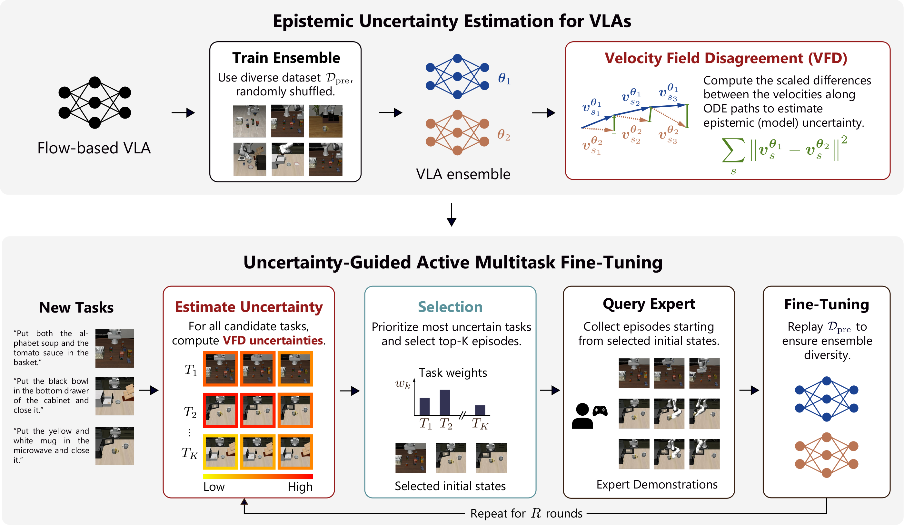
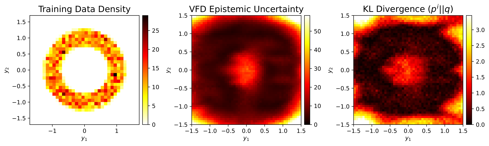
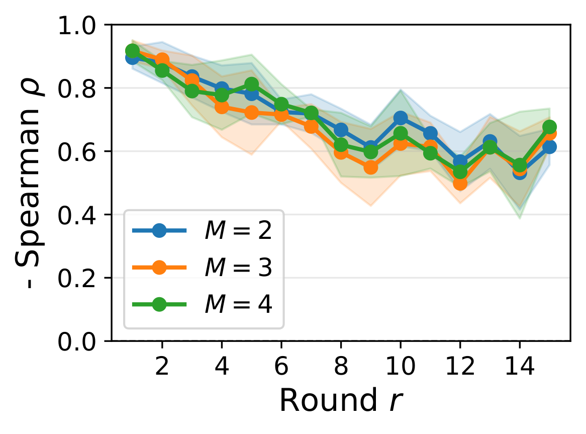
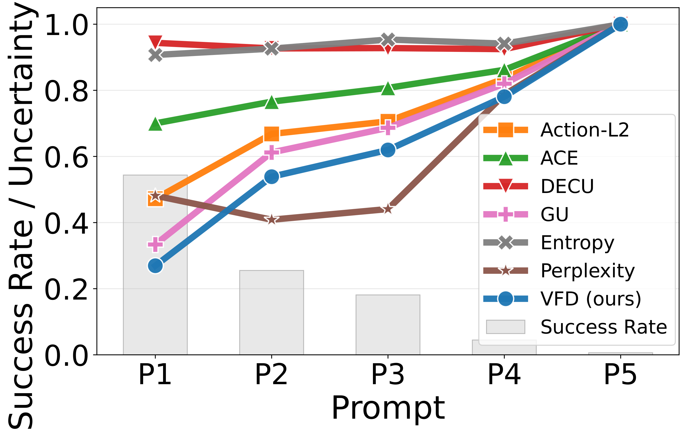
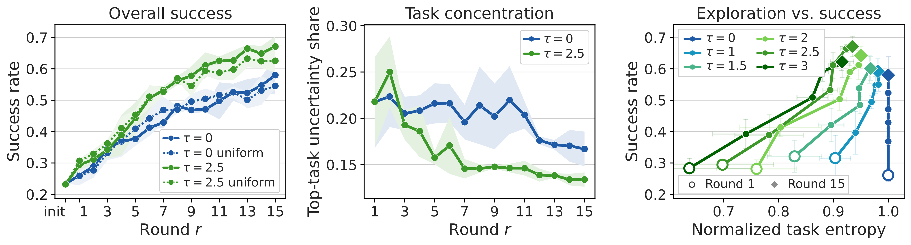
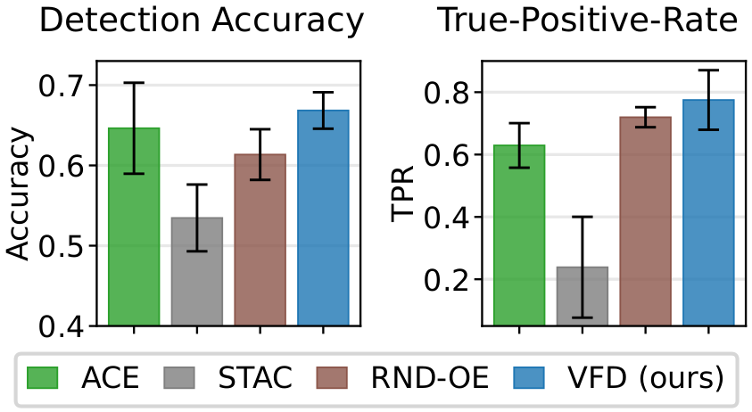

Uncertainty Quantification for Flow-Based Vision-Language-Action Models
Abstract
Vision-language-action models (VLAs) combine vision-language backbones with expressive generative action heads trained via flow matching on large-scale robotic datasets. Despite their strong empirical performance in robotic manipulation, VLAs lack mechanisms to quantify confidence in their predictions and to detect when their actions may be unreliable. This presents a critical limitation for real-world deployment in non-stationary environments, where models inevitably encounter scenarios outside their pretraining distribution and may fail without warning. To address this, we derive an efficient method for quantifying epistemic uncertainty in flow-matching models by leveraging velocity-field disagreement (VFD) across a small ensemble. We successfully use this uncertainty estimate for failure detection during deployment and active fine-tuning of flow-based VLAs. To this end, we propose SAVE, a framework for uncertainty-guided active multitask fine-tuning that reduces the number of costly expert demonstrations required to adapt VLAs to new tasks. Through extensive experiments on the LIBERO benchmark, we demonstrate that VFD yields better-calibrated uncertainty estimates predictive of downstream performance, that VFD achieves strong performance in detecting failures, and that uncertainty-guided data acquisition with SAVE requires at least 22% fewer samples than baselines. In summary, our work shows that quantifying epistemic uncertainty in flow-based VLAs improves both failure awareness and adaptation.
Overview

Motivation
Modern VLAs pair a pre-trained vision-language backbone with an action expert trained via flow matching, achieving impressive multitask performance. Yet deploying them in the real world exposes them to non-stationarity: users repurpose robots for novel tasks, object appearances change, and environments evolve.
- VLAs confidently execute erratic actions in out-of-distribution scenarios rather than abstaining or asking for help.
- They cannot communicate what they do not know, preventing timely failure detection and robust self-improvement.
- Robustly adapting VLAs to new domains currently requires collecting large numbers of costly expert demonstrations.
We address these challenges by quantifying epistemic uncertainty in flow-based VLAs through velocity-field disagreement (VFD), and use it both to detect failures at deployment and to guide data-efficient adaptation with SAVE (sample-efficient active fine-tuning via velocity-field epistemic uncertainty).
Velocity-Field Disagreement
VFD measures the disagreement between the velocity fields of a small ensemble of flow-matching models along their generative ODE trajectories. The estimator is mathematically grounded, computationally tractable, and naturally handles the high-dimensional, multimodal action distributions of VLAs. On a 2D toy problem, VFD is high precisely where inputs lie far outside the training distribution, closely matching the KL divergence between the learned and ground-truth conditional distributions.

Calibration
On the LIBERO benchmark, VFD is more strongly correlated with per-task success rates than a wide range of uncertainty baselines, making it a reliable predictor of downstream performance. A lightweight two-member ensemble is sufficient, and VFD remains well-calibrated even when only the language prompt is varied.
| Metric | Action-L2 | ACE | DECU | GU | Entropy | Perplexity | VFD (ours) |
|---|---|---|---|---|---|---|---|
| −Spearman | 0.50±0.13 | 0.31±0.12 | 0.31±0.13 | 0.62±0.00 | 0.10±0.12 | −0.04±0.09 | 0.71±0.03 |
| −Pearson | 0.48±0.09 | 0.36±0.08 | 0.23±0.15 | 0.65±0.02 | 0.23±0.21 | 0.02±0.15 | 0.71±0.02 |


Sample-Efficient Active Fine-Tuning
Using VFD to guide demonstration collection, SAVE reaches target success rates with substantially fewer fine-tuning rounds and attains the highest final success rate among all selection strategies — reducing the required expert data by at least 22% compared to baselines.
| SR Threshold | Random | Diversity | SAVE w/ Action-L2 | SAVE w/ GU | SAVE w/ VFD |
|---|---|---|---|---|---|
| ≥ 40% | 5.7±1.2 | 4.7±0.5 | 5.0±0.8 | 5.0±1.4 | 5.0±0.8 |
| ≥ 45% | 6.7±1.2 | 7.3±0.9 | 6.0±1.4 | 5.7±2.4 | 5.3±0.9 |
| ≥ 50% | 8.7±2.1 | 9.7±1.7 | 9.0±2.4 | 7.3±1.9 | 6.0±0.8 |
| ≥ 55% | — | — | 9.0±1.0 | 11.0±1.6 | 8.0±1.6 |
| ≥ 60% | — | — | — | 12.7±1.7 | 10.0±0.8 |
| ≥ 65% | — | — | — | — | 12.5±0.5 |
| Final SR | 54.6±0.9 | 54.9±1.3 | 56.8±7.6 | 64.0±2.6 | 67.1±3.2 |

Failure Detection
Beyond guiding data collection, VFD also signals when a deployed policy is about to fail. We roll out the fine-tuned VLA, compute VFD scores from the two-member ensemble at each action-generation timestep, and calibrate task-specific thresholds from only 10 successful rollouts using conformal prediction. Compared to recent failure-detection baselines (ACE, STAC, RND-OE), high VFD is a strong signal for imminent failure — reaching 67% accuracy and correctly predicting 79% of all failures (TPR).

Highlights
- A mathematically grounded epistemic uncertainty estimator for flow-matching models based on velocity-field disagreement (VFD).
- SAVE, a framework for uncertainty-guided active fine-tuning that uses VFD to prioritize tasks and initial states for expert demonstration collection.
- VFD yields better-calibrated uncertainty estimates predictive of downstream task performance, with a lightweight two-member ensemble.
- VFD detects deployment failures more reliably than baselines.
- SAVE reduces the expert data required for multitask adaptation by at least 22%.
BibTeX
@article{romer2026uq_vla,
title={Uncertainty Quantification for Flow-Based Vision-Language-Action Models},
author={Ralf R{\"o}mer and Maximilian Seeliger and Saida Liu and Ben Sturgis and Marco Bagatella and Daniel Marta and Andreas Krause and Angela P. Schoellig},
journal={arXiv preprint arXiv:2606.18043},
year={2026}
}